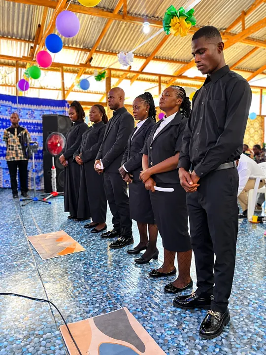
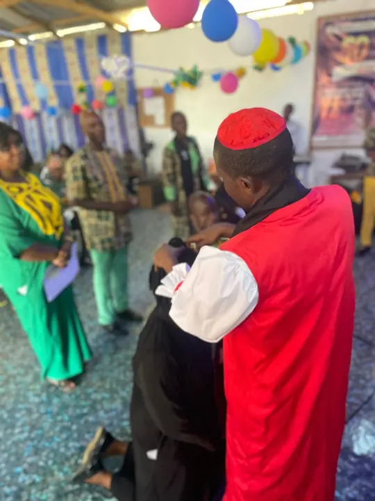

United States of America
Bishop
Bishop David J. Davis
One of our bishops in America, standing with the Christ Laborers family in Liberia as a father in the faith and a partner in the Gospel.
Shepherds & Servants
Our bishops, clergy and ministry leaders are called, trained and ordained to care for God's people with humility and faithfulness.

Our Founders
Founder and Presiding Bishop of Christ Laborers Church (WAC) of Liberia, Bishop Primate for Liberia (WAC), and Lead Disciple-Maker of the Equipping The Saints™ School of Discipleship, Leadership and Ministry.
Bishop Togbah founded Christ Laborers on March 10, 2020, together with his wife, Reverend Mrs. Francess D. Togbah, and has shepherded it ever since. He is known for fiery, Scripture-soaked preaching and for patient, hands-on disciple-making. Under his leadership the church has held multi-day revival meetings, seasons of consecration such as 50 Days With the Lord, and ordination services that have set apart a new generation of ministers.
Co-founder of Christ Laborers Church alongside her husband and Resident Pastor of the congregation, caring for the flock and ministering the Word. Watch her revival message →
Our House of Bishops
The House of Bishops is the senior spiritual and episcopal leadership body of Christ Laborers Church (WAC) of Liberia. It provides spiritual oversight, doctrinal guidance, pastoral leadership, episcopal coordination, church development, ministerial accountability and strategic direction.
Depending on the Church's approved structure, leadership may include:
All ecclesiastical offices operate under the constitution, canons, policies and approved governance structure of the Church.
A Worldwide Communion
Christ Laborers is part of a worldwide Anglican family. Our bishops in the United States stand with us in prayer and fellowship, joining Paynesville to the wider body of Christ.
Bishop
One of our bishops in America, standing with the Christ Laborers family in Liberia as a father in the faith and a partner in the Gospel.
Our Pastors & Ministers
Men and women who have walked through discipleship and training and have been commissioned by the laying on of hands.
Guards the faith, ordains ministers and gives spiritual oversight to the whole church.
Preach the Word, administer the sacraments and shepherd the congregation.
Serve the practical needs of the church family and assist in worship.
Lead worship, youth, women, men and outreach, equipping others to serve.
Ordination & Commissioning
Leadership at Christ Laborers grows through discipleship. We do not simply appoint leaders. We raise them.
Grow in the Word through Equipping The Saints.
Prove faithful in ministry within the church.
Receive leadership and ministry formation.
Be set apart and sent by the laying on of hands.


Every leader begins as a disciple. Start with our Monday classes and let us walk with you.